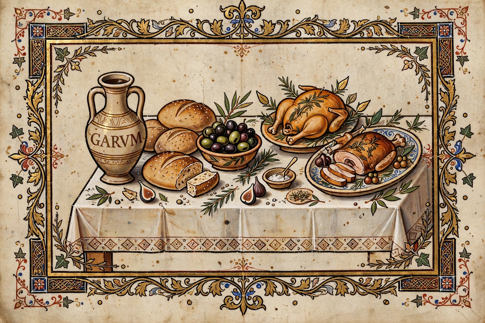

| Apicius | |
|---|---|
 Frontispiece of the 1709 Amsterdam edition of De re coquinaria | |
| Language | Latin (Vulgar Latin) |
| Subject | Roman cookery |
| Compiled | Late 4th or early 5th century AD (attributed) |
| Books | 10 |
| Recipes | Roughly 500 |
Apicius, also known by its full title De re coquinaria ("On the Subject of Cooking"), is a collection of Roman cookery recipes generally thought to have been compiled in the late 4th or early 5th century AD. It is the most complete surviving cookbook from the ancient world. The name is associated with Marcus Gavius Apicius, a renowned gourmet of the 1st century AD in the reign of Tiberius, though the text accumulated over centuries and cannot be his work alone.
The text is organized into ten books by subject: the careful cook; minced dishes; vegetables; general recipes; pulses and grains; fowl; fine dishes; quadrupeds; seafood; and fish sauces. The roughly 500 recipes rely heavily on garum (fermented fish sauce), honey, vinegar, wine reductions, and complex spice mixtures including pepper, cumin, coriander, lovage, and the now-extinct silphium (substituted in the text by asafoetida). Instructions are terse, assume professional knowledge, and rarely give quantities.
Ancient sources portray Apicius as fantastically wealthy and devoted to luxury: Pliny the Elder credits him with refinements such as feeding snails on milk and fattening sows on dried figs. Seneca reports that, having spent his fortune down to a last ten million sesterces, Apicius poisoned himself rather than face ordinary food. Several other Roman gourmets shared the name, which may have become a generic label for cookbooks.
The text survives in two Carolingian manuscripts of the 9th century, one at Fulda and one associated with Tours, and was first printed at Milan in 1498. A shorter excerpted version, the Apici excerpta attributed to Vinidarius, preserves additional recipes. Modern cooks and scholars have reconstructed many dishes, finding flavours—sweet-sour, intensely spiced, fish-sauce-based—remote from modern European palates.